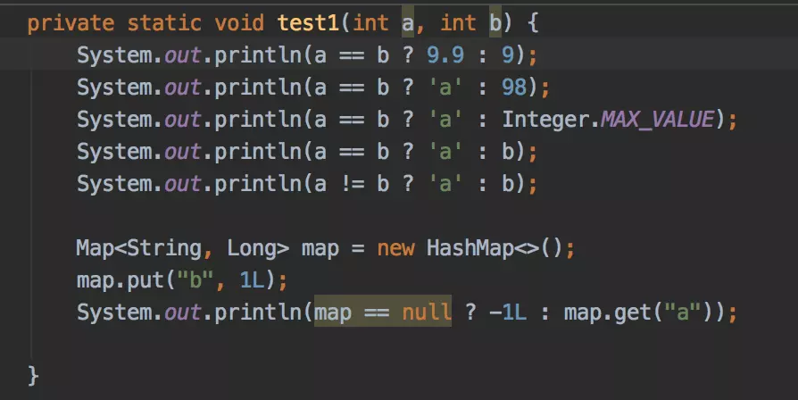
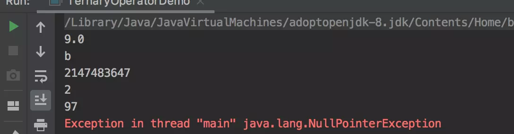

废话不多说，直接上题：

提问：当 a=1，b=2 时，test1 方法的执行结果是什么？思考一分钟。
答案：

在使用三目运算符时，尽量保证两个返回值的类型一致，不然会触发类型转换，转换规则如下：
如果返回值 X 和返回值 Y 是同种类型，那么返回类型毫无疑问就是这种类型。
如果两个返回值 X 和 Y 的类型不同，那么返回值类型为他们两最接近的父类。举例：
// String 和 Boolean 都实现了 Serializable 接口
Serializable serializable = a == b ? "true" : Boolean.FALSE;
// 所有类都继承了 Object 类
Object o = a == b ? new ArrayList<>() : new TernaryOperatorDemo();对于基本数据类型，如果其中一个返回值 X 类型为byte、short或者char，另一个返回值 Y 类型为int，那么若在编译期就能判断出 Y 的取值范围在 X 的取值范围之内，则返回类型为 X 的类型，反之则为 Y 的类型。如果返回值 X 类型不为以上几种，则会触发隐藏类型转换。
当基本数据类型和对象数据类型相遇时，三目运算符默认返回结果为基本数据类型。
了解以上规则之后，我们再看来一下 test1 方法。
private static void test1(int a, int b) {
// 触发隐藏类型转换,int 类型 9 转为 9.0D
System.out.println(a == b ? 9.9 : 9);
// 编译期判断,98 在 char 之内,转为 b
System.out.println(a == b ? 'a' : 98);
// 编译期判断,超出char范围，统一转 int
System.out.println(a == b ? 'a' : Integer.MAX_VALUE);
// 编译期时无法判断 b 的取值,触发隐藏类型转换,统一转 int
System.out.println(a == b ? 'a' : b);
System.out.println(a != b ? 'a' : b);
Map<String, Long> map = new HashMap<>();
map.put("b", 1L);
// 基本数据类型和对象数据类型相遇时,默认转为基本数据类，
// map.get("a") 返回 null,转为基本数据类型时，报空指针异常
System.out.println(map == null ? -1L : map.get("a"));
}如何修改 test1 方法，使得代码运行时不抛空指针异常，请至少提供一种解决方案。
本文首发于个人微信公众号：Coder小黑，欢迎大家扫码关注哦。